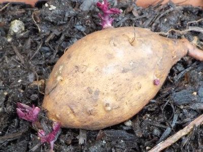

更新日 : 2026/04/29

去年収穫したサツマイモを大切に冷蔵庫の上で保管して冬を越しました。
もう小さい芽が出てますね。これからすくすくと育って欲しいです。
サツマイモを蒸すのは難しいので、適度な大きさに切って茹でるようにしています。
【おいしいものを食べよう。】【たくさん寝よう。】
【ソロ活をしよう!】【季節感のあることをしよう。】【動画視聴はほどほどに。】【当サイトの全てのコンテンツは無断転載禁止です。】